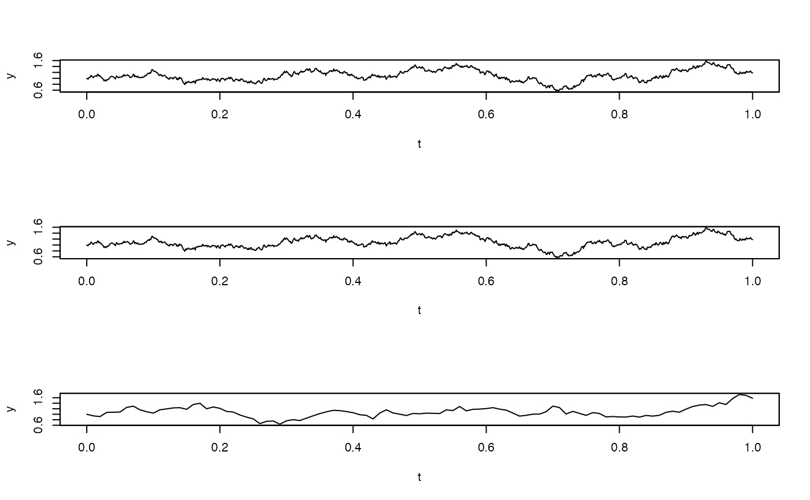
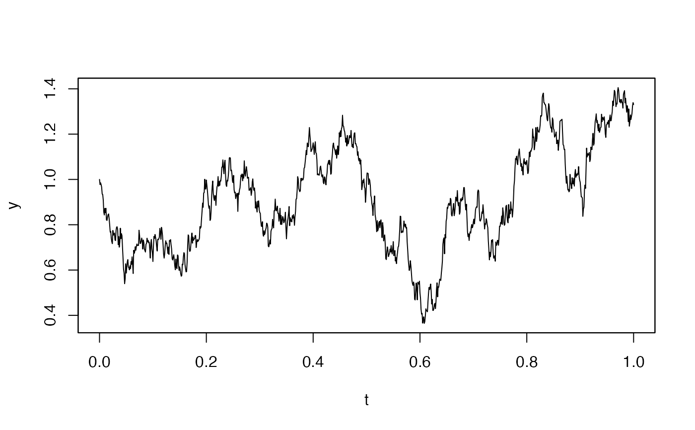

simulate.RdSimulate multi-dimensional stochastic processes.
simulate(object, nsim=1, seed=NULL, xinit, true.parameter, space.discretized = FALSE,
increment.W = NULL, increment.L = NULL, method = "euler", hurst, methodfGn = "WoodChan",
sampling=sampling, subsampling=subsampling, ...)an yuima-class,
yuima.model-class or yuima.carma-class object.
initial value vector of state variables.
named list of parameters.
flag to switch to space-discretized Euler Maruyama method.
to specify Wiener increment for each time tics in advance.
to specify Levy increment for each time tics in advance.
string Variable for simulation scheme. The default value method=euler uses the euler discretization for the simulation of a sample path.
Not used yet. Included only to match the standard genenirc in
package stats.
Not used yet. Included only to match the standard genenirc in
package stats.
value of Hurst parameter for simulation of the fGn. Overrides the specified hurst slot.
simulation methods for fractional Gaussian noise.
passed to setSampling to create a sampling
a yuima.sampling-class object.
a yuima.sampling-class object.
simulate is a function to solve SDE using the Euler-Maruyama
method. This function supports usual Euler-Maruyama method for
multidimensional SDE, and space
discretized Euler-Maruyama method for one dimensional SDE.
It simulates solutions of stochastic differential equations with Gaussian noise, fractional Gaussian noise awith/without jumps.
If a yuima-class object is passed as input, then the sampling
information is taken from the slot sampling of the object.
If a yuima.carma-class object, a yuima.model-class object or a
yuima-class object with missing sampling slot is passed
as input the sampling argument is used. If this argument is missing
then the sampling structure is constructed from Initial, Terminal,
etc. arguments (see setSampling for details on how to use these
arguments).
For a COGARCH(p,q) process setting method=mixed implies that the simulation scheme is based on the solution of the state space process. For the case in which the underlying noise is a compound poisson Levy process, the trajectory is build firstly by simulation of the jump time, then the quadratic variation and the increments noise are simulated exactly at jump time. For the others Levy process, the simulation scheme is based on the discretization of the state space process solution.
a yuima-class object.
In the simulation of multi-variate Levy processes, the values of parameters have to be defined outside of simulate function in advance (see examples below).
set.seed(123)
# Path-simulation for 1-dim diffusion process.
# dXt = -0.3*Xt*dt + dWt
mod <- setModel(drift="-0.3*y", diffusion=1, solve.variable=c("y"))
str(mod)
#> Formal class 'yuima.model' [package "yuima"] with 16 slots
#> ..@ drift : expression((-0.3 * y))
#> ..@ diffusion :List of 1
#> .. ..$ : expression((1))
#> ..@ hurst : num 0.5
#> ..@ jump.coeff : list()
#> ..@ measure : list()
#> ..@ measure.type : chr(0)
#> ..@ parameter :Formal class 'model.parameter' [package "yuima"] with 7 slots
#> .. .. ..@ all : chr(0)
#> .. .. ..@ common : chr(0)
#> .. .. ..@ diffusion: chr(0)
#> .. .. ..@ drift : chr(0)
#> .. .. ..@ jump : chr(0)
#> .. .. ..@ measure : chr(0)
#> .. .. ..@ xinit : chr(0)
#> ..@ state.variable : chr "x"
#> ..@ jump.variable : chr(0)
#> ..@ time.variable : chr "t"
#> ..@ noise.number : num 1
#> ..@ equation.number: int 1
#> ..@ dimension : int [1:6] 0 0 0 0 0 0
#> ..@ solve.variable : chr "y"
#> ..@ xinit : expression((0))
#> ..@ J.flag : logi FALSE
# Set the model in an `yuima' object with a sampling scheme.
T <- 1
n <- 1000
samp <- setSampling(Terminal=T, n=n)
#> Warning:
#> YUIMA: 'delta' (re)defined.
ou <- setYuima(model=mod, sampling=samp)
# Solve SDEs using Euler-Maruyama method.
par(mfrow=c(3,1))
ou <- simulate(ou, xinit=1)
plot(ou)
set.seed(123)
ouB <- simulate(mod, xinit=1,sampling=samp)
plot(ouB)
set.seed(123)
ouC <- simulate(mod, xinit=1, Terminal=1, n=1000)
#> Warning:
#> YUIMA: 'delta' (re)defined.
plot(ouC)

par(mfrow=c(1,1))
# Path-simulation for 1-dim diffusion process.
# dXt = theta*Xt*dt + dWt
mod1 <- setModel(drift="theta*y", diffusion=1, solve.variable=c("y"))
str(mod1)
#> Formal class 'yuima.model' [package "yuima"] with 16 slots
#> ..@ drift : expression((theta * y))
#> ..@ diffusion :List of 1
#> .. ..$ : expression((1))
#> ..@ hurst : num 0.5
#> ..@ jump.coeff : list()
#> ..@ measure : list()
#> ..@ measure.type : chr(0)
#> ..@ parameter :Formal class 'model.parameter' [package "yuima"] with 7 slots
#> .. .. ..@ all : chr "theta"
#> .. .. ..@ common : chr(0)
#> .. .. ..@ diffusion: chr(0)
#> .. .. ..@ drift : chr "theta"
#> .. .. ..@ jump : chr(0)
#> .. .. ..@ measure : chr(0)
#> .. .. ..@ xinit : chr(0)
#> ..@ state.variable : chr "x"
#> ..@ jump.variable : chr(0)
#> ..@ time.variable : chr "t"
#> ..@ noise.number : num 1
#> ..@ equation.number: int 1
#> ..@ dimension : int [1:6] 1 0 0 1 0 0
#> ..@ solve.variable : chr "y"
#> ..@ xinit : expression((0))
#> ..@ J.flag : logi FALSE
ou1 <- setYuima(model=mod1, sampling=samp)
# Solve SDEs using Euler-Maruyama method.
ou1 <- simulate(ou1, xinit=1, true.p = list(theta=-0.3))
plot(ou1)

if (FALSE) {
# A multi-dimensional (correlated) diffusion process.
# To describe the following model:
# X=(X1,X2,X3); dXt = U(t,Xt)dt + V(t)dWt
# For drift coeffcient
U <- c("-x1","-2*x2","-t*x3")
# For diffusion coefficient of X1
v1 <- function(t) 0.5*sqrt(t)
# For diffusion coefficient of X2
v2 <- function(t) sqrt(t)
# For diffusion coefficient of X3
v3 <- function(t) 2*sqrt(t)
# correlation
rho <- function(t) sqrt(1/2)
# coefficient matrix for diffusion term
V <- matrix( c( "v1(t)",
"v2(t) * rho(t)",
"v3(t) * rho(t)",
"",
"v2(t) * sqrt(1-rho(t)^2)",
"",
"",
"",
"v3(t) * sqrt(1-rho(t)^2)"
), 3, 3)
# Model sde using "setModel" function
cor.mod <- setModel(drift = U, diffusion = V,
state.variable=c("x1","x2","x3"),
solve.variable=c("x1","x2","x3") )
str(cor.mod)
# Set the `yuima' object.
cor.samp <- setSampling(Terminal=T, n=n)
cor <- setYuima(model=cor.mod, sampling=cor.samp)
# Solve SDEs using Euler-Maruyama method.
set.seed(123)
cor <- simulate(cor)
plot(cor)
# A non-negative process (CIR process)
# dXt= a*(c-y)*dt + b*sqrt(Xt)*dWt
sq <- function(x){y = 0;if(x>0){y = sqrt(x);};return(y);}
model<- setModel(drift="0.8*(0.2-x)",
diffusion="0.5*sq(x)",solve.variable=c("x"))
T<-10
n<-1000
sampling <- setSampling(Terminal=T,n=n)
yuima<-setYuima(model=model, sampling=sampling)
cir<-simulate(yuima,xinit=0.1)
plot(cir)
# solve SDEs using Space-discretized Euler-Maruyama method
v4 <- function(t,x){
return(0.5*(1-x)*sqrt(t))
}
mod_sd <- setModel(drift = c("0.1*x1", "0.2*x2"),
diffusion = c("v1(t)","v4(t,x2)"),
solve.var=c("x1","x2")
)
samp_sd <- setSampling(Terminal=T, n=n)
sd <- setYuima(model=mod_sd, sampling=samp_sd)
sd <- simulate(sd, xinit=c(1,1), space.discretized=TRUE)
plot(sd)
## example of simulation by specifying increments
## Path-simulation for 1-dim diffusion process
## dXt = -0.3*Xt*dt + dWt
mod <- setModel(drift="-0.3*y", diffusion=1,solve.variable=c("y"))
str(mod)
## Set the model in an `yuima' object with a sampling scheme.
Terminal <- 1
n <- 500
mod.sampling <- setSampling(Terminal=Terminal, n=n)
yuima.mod <- setYuima(model=mod, sampling=mod.sampling)
##use original increment
delta <- Terminal/n
my.dW <- rnorm(n * yuima.mod@model@noise.number, 0, sqrt(delta))
my.dW <- t(matrix(my.dW, nrow=n, ncol=yuima.mod@model@noise.number))
## Solve SDEs using Euler-Maruyama method.
yuima.mod <- simulate(yuima.mod,
xinit=1,
space.discretized=FALSE,
increment.W=my.dW)
if( !is.null(yuima.mod) ){
dev.new()
# x11()
plot(yuima.mod)
}
## A multi-dimensional (correlated) diffusion process.
## To describe the following model:
## X=(X1,X2,X3); dXt = U(t,Xt)dt + V(t)dWt
## For drift coeffcient
U <- c("-x1","-2*x2","-t*x3")
## For process 1
diff.coef.1 <- function(t) 0.5*sqrt(t)
## For process 2
diff.coef.2 <- function(t) sqrt(t)
## For process 3
diff.coef.3 <- function(t) 2*sqrt(t)
## correlation
cor.rho <- function(t) sqrt(1/2)
## coefficient matrix for diffusion term
V <- matrix( c( "diff.coef.1(t)",
"diff.coef.2(t) * cor.rho(t)",
"diff.coef.3(t) * cor.rho(t)",
"",
"diff.coef.2(t)",
"diff.coef.3(t) * sqrt(1-cor.rho(t)^2)",
"diff.coef.1(t) * cor.rho(t)",
"",
"diff.coef.3(t)"
), 3, 3)
## Model sde using "setModel" function
cor.mod <- setModel(drift = U, diffusion = V,
solve.variable=c("x1","x2","x3") )
str(cor.mod)
## Set the `yuima' object.
set.seed(123)
obj.sampling <- setSampling(Terminal=Terminal, n=n)
yuima.obj <- setYuima(model=cor.mod, sampling=obj.sampling)
##use original dW
my.dW <- rnorm(n * yuima.obj@model@noise.number, 0, sqrt(delta))
my.dW <- t(matrix(my.dW, nrow=n, ncol=yuima.obj@model@noise.number))
## Solve SDEs using Euler-Maruyama method.
yuima.obj.path <- simulate(yuima.obj, space.discretized=FALSE,
increment.W=my.dW)
if( !is.null(yuima.obj.path) ){
dev.new()
# x11()
plot(yuima.obj.path)
}
##:: sample for Levy process ("CP" type)
## specify the jump term as c(x,t)dz
obj.model <- setModel(drift=c("-theta*x"), diffusion="sigma",
jump.coeff="1", measure=list(intensity="1", df=list("dnorm(z, 0, 1)")),
measure.type="CP", solve.variable="x")
##:: Parameters
lambda <- 3
theta <- 6
sigma <- 1
xinit <- runif(1)
N <- 500
h <- N^(-0.7)
eps <- h/50
n <- 50*N
T <- N*h
set.seed(123)
obj.sampling <- setSampling(Terminal=T, n=n)
obj.yuima <- setYuima(model=obj.model, sampling=obj.sampling)
X <- simulate(obj.yuima, xinit=xinit, true.parameter=list(theta=theta, sigma=sigma))
dev.new()
plot(X)
##:: sample for Levy process ("CP" type)
## specify the jump term as c(x,t,z)
## same plot as above example
obj.model <- setModel(drift=c("-theta*x"), diffusion="sigma",
jump.coeff="z", measure=list(intensity="1", df=list("dnorm(z, 0, 1)")),
measure.type="CP", solve.variable="x")
set.seed(123)
obj.sampling <- setSampling(Terminal=T, n=n)
obj.yuima <- setYuima(model=obj.model, sampling=obj.sampling)
X <- simulate(obj.yuima, xinit=xinit, true.parameter=list(theta=theta, sigma=sigma))
dev.new()
plot(X)
##:: sample for Levy process ("code" type)
## dX_{t} = -x dt + dZ_t
obj.model <- setModel(drift="-x", xinit=1, jump.coeff="1", measure.type="code",
measure=list(df="rIG(z, 1, 0.1)"))
obj.sampling <- setSampling(Terminal=10, n=10000)
obj.yuima <- setYuima(model=obj.model, sampling=obj.sampling)
result <- simulate(obj.yuima)
dev.new()
plot(result)
##:: sample for multidimensional Levy process ("code" type)
## dX = (theta - A X)dt + dZ,
## theta=(theta_1, theta_2) = c(1,.5)
## A=[a_ij], a_11 = 2, a_12 = 1, a_21 = 1, a_22=2
require(yuima)
x0 <- c(1,1)
beta <- c(.1,.1)
mu <- c(0,0)
delta0 <- 1
alpha <- 1
Lambda <- matrix(c(1,0,0,1),2,2)
cc <- matrix(c(1,0,0,1),2,2)
obj.model <- setModel(drift=c("1 - 2*x1-x2",".5-x1-2*x2"), xinit=x0,
solve.variable=c("x1","x2"), jump.coeff=cc, measure.type="code",
measure=list(df="rNIG(z, alpha, beta, delta0, mu, Lambda)"))
obj.sampling <- setSampling(Terminal=10, n=10000)
obj.yuima <- setYuima(model=obj.model, sampling=obj.sampling)
result <- simulate(obj.yuima,true.par=list( alpha=alpha,
beta=beta, delta0=delta0, mu=mu, Lambda=Lambda))
plot(result)
# Path-simulation for a Carma(p=2,q=1) model driven by a Brownian motion:
carma1<-setCarma(p=2,q=1)
str(carma1)
# Set the sampling scheme
samp<-setSampling(Terminal=100,n=10000)
# Set the values of the model parameters
par.carma1<-list(b0=1,b1=2.8,a1=2.66,a2=0.3)
set.seed(123)
sim.carma1<-simulate(carma1,
true.parameter=par.carma1,
sampling=samp)
plot(sim.carma1)
# Path-simulation for a Carma(p=2,q=1) model driven by a Compound Poisson process.
carma1<-setCarma(p=2,
q=1,
measure=list(intensity="1",df=list("dnorm(z, 0, 1)")),
measure.type="CP")
# Set Sampling scheme
samp<-setSampling(Terminal=100,n=10000)
# Fix carma parameters
par.carma1<-list(b0=1,
b1=2.8,
a1=2.66,
a2=0.3)
set.seed(123)
sim.carma1<-simulate(carma1,
true.parameter=par.carma1,
sampling=samp)
plot(sim.carma1)
}